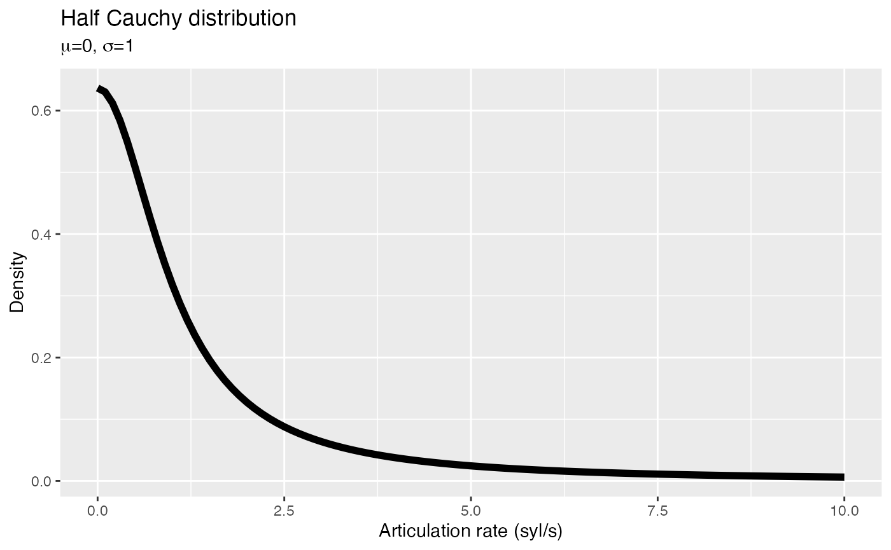

Which priors?
Depending on the type of model you are running and the nature of the included predictors, you will have to specify a certain set of priors.
You can easily learn which priors you can specify in a model by using
the function brms::get_prior(). You will try it out in a
second.
We are trying to find out what kind of effect politeness has (if any) on articulation rate.
As a first approximation, we could start with the following model:
# Don't run me yet!
m1 <- brm(
formula = articulation_rate ~ attitude,
data = polite
)To find out which priors are available in this model, you just need
to specify the model formula and the data in the
get_prior() function.
Go ahead and fill in the following code snippet and run it when you’re done to get a list of priors! You’ll learn how to interpret the output in the next section.
get_prior(
formula = ...,
data = ...
)Understand the syntax
When you run get_prior(), a table is returned with a few
columns. Each row corresponds to one prior (and to one model
parameter).
For now, you can focus just on the first three (prior,
class, coef).
prior
The column prior tells you which prior probability
distributions are set as default by brms. For our model, the first two
default priors are (flat), i.e. uniform distributions (all
values are equally probable). The other two priors are
Student-t distributions. (more on prior specification
below).
But we will want to change them all to something more appropriate (we will talk about what makes an appropriate prior tomorrow).
class
The columns class and coef are the ones you
should check. class indicates the type of model parameter:
Intercept is the model intercept,b indicates a
predictor term, and sigma the model’s residual standard
deviation.
coef
The third column, coef indicates to which model
predictor the prior is assigned. In our model above, there’s only one
predictor (attitude), and that’s what you can see in the
get_prior() output.
Since attitude has only two levels (inf and
pol), we only have one parameter for the second level
pol (the level inf is included in the
Intercept).
Specify your priors
It’s quite easy to specify priors with brms. You just need to use the
function prior()!
Since we need to specify more than one prior, we need multiple calls
to prior(), concatenated with c(). Like in the
following example:
Within the function prior(), you need to specify the
prior distribution with its parameters, the prior class
(class), and the prior coefficient (coef) if
any.
For our simple model above, we need three priors:
- The prior of the
Intercept. - The prior of the slope for
attitudepol. - The prior for the standard deviation
sigma.
Remember that get_prior() also lists class-generic
priors (in our case, the prior for class = b), but you
don’t need to specify those if you specify the prior for the coefficient
(in our case, class = b, coef = attitudepol).
We’ll give you a head start by telling you which priors we can use in this model:
-
Intercept: a Normal distribution with mean = 0 and sd = 15. -
attitudepol: a Normal distribution with mean = 0 and sd = 10. -
sigma: a Half-Cauchy distribution with mean = 0 and sd = 1.
The Half Cauchy distribution is something we haven’t seen yet. This distribution is helpful for estimating measures like standard deviations. It’s “half” because only the positive values are taken into consideration, since the standard deviation can only ever be positive.
This is how a Half Cauchy distribution with mean 0 and standard deviation 1 looks like:
x <- seq(0, 10, by = 0.1)
y <- dhcauchy(x, sigma = 1)
ggplot() +
aes(x, y) +
geom_line(size = 2) +
labs(
x = "Articulation rate (syl/s)", y = "Density",
title = "Half Cauchy distribution",
subtitle = expression(paste(mu, "=0", ", ", sigma, "=1"))
)
#> Warning: Using `size` aesthetic for lines was deprecated in ggplot2 3.4.0.
#> ℹ Please use `linewidth` instead.
#> This warning is displayed once every 8 hours.
#> Call `lifecycle::last_lifecycle_warnings()` to see where this warning was
#> generated.
As you can see, the probability of getting bigger values drops very quickly while moving away from 0. This ensures that the prior for the standard deviation has a “regularising” effect (we will talk about regularising priors tomorrow), which helps brms to estimate the standard deviation.
Now go ahead and fill in the following code snippet with the right parameters and arguments:
my_priors <- c(
prior(normal(..., ...), class = Intercept),
prior(normal(..., ...), class = b, coef = ...),
prior(cauchy(0, ...), class = ...)
)And now let’s fit the model using our priors!
b_mod_01 <- brm(
articulation_rate ~ attitude,
data = polite,
prior = my_priors
)